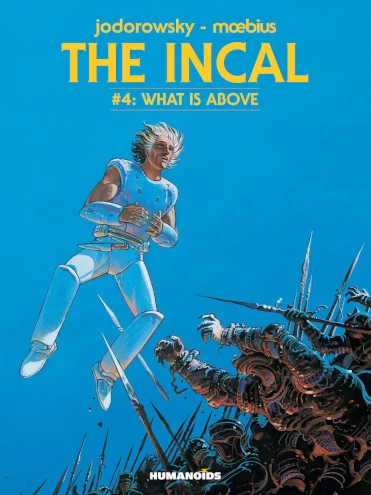
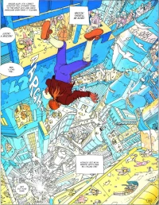
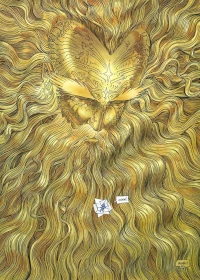
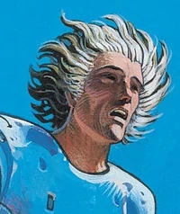

The Incal




Written by Alejandro Jodorowsky, art by Jean Giraud (aka Mœbius), 1980-88
This creative pairing also worked together on the unproduced 1970s movie of Dune, the one whose cast was to have included Salvador Dalí, Orson Welles, Gloria Swanson, and Mick Jagger, and presumably would have been pretty trippy - I mean, even more trippy than the David Lynch one turned out to be. The artist, Mœbius, has had a long and glorious career, knighted for his art in his native France, and he worked on other movies such as Alien, Tron, The Fifth Element, and The Abyss.
I grabbed this in the English translation from the original French, having been intrigued by the Pocket Essential Alan Moore's description of it as a contender for "the best comic in the medium's history".
Echoes of all of these are visible throughout the consistently stunning artwork of The Incal, and it has been explicitly noted as an influence on the expansive decayed futurescapes of Akira and Blade Runner, the flamboyant visuals of the Star Wars prequels, and even the concept of that iconic technological terror, the "War Star", which can atomize a solar system in seconds.
The writing really swings for the fences, a sprawling tale of a reluctant hero's journey, taking in societal commentary, intergalactic travel, spiritual transformation, iconic incarnations of good and evil, and a deep thread of mysticism.
For me, it does have a very evident "foreign" feeling - small social nuances with which I'm unfamiliar. Equally clearly, this is part of its exotic charm. And while the story touches on, perhaps even consists of, deep themes, it doesn't so much articulately explore them, but instead simply incorporates them. This is not a comic for people who are not already comic fans.
In lesser hands, it might have been undisciplined. But wherever the story roams, the artwork is endlessly enthralling. I especially liked the touch of protagonist, John DiFool, starting out distinctly ugly, but being rendered more handsomely on the rare occasions he manages to get in touch with his more noble aspects. Jodorowsky manages to keep it all together, bringing it around to a splendidly satisfying theatrical close. Bravo!